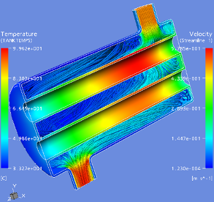
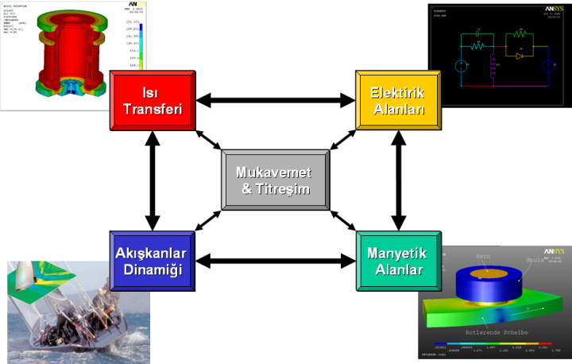
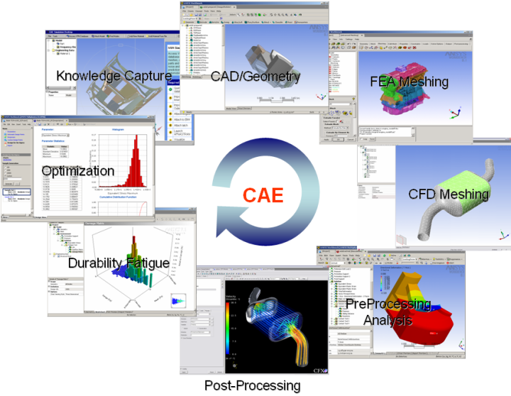

|
Bir de aramýzdan bazýlarý diyebilir ki "Biz araþtýrma geliþtirme (Ar-Ge) ya da ürün geliþtirme (Ür-Ge) yapmýyoruz, bizim için bu teknolojiler biraz fazla gelir!". Ýþte o zaman söyleyebileceðimiz bir þey var: "Emin misiniz?"
Günümüzde firmalar farkýnda olmasalar bile uzun vadeli stratejileri sebebi ile piyasadaki konumlandýrmalarýný belirlemektedirler. Bazý firmalar "ben öncü olacaðým, her þeyi kendim icat edeceðim" derken, bir diðer uç noktadaki firmalar ise, "piyasada ne varsa aynýsýný kopyalayýp yapacaðým" diyebilmektedirler. Biraz daha aradakiler ise var olan çözümleri biraz iyileþtirme yolunda bir çaba sarf ederken tüm firmalarýn amacý ise þirketin kârlýlýðýný arttýrýp sürdürülebilirliðini garanti altýna almak olarak özetlenebilir.
Konumlandýrma dizeyinde (portfolio matrix) nerede olursak olalým, teknik kararlar almak zorundayýz. En basitinden bir ürünü kopyalarken bile "tersine mühendislik" dediðimiz olgudan faydalanmaktayýz. Örnek olarak sac bir parçayý kopya olarak üretebilmek için onun kalýbýný dizayn etmek zorundayýz. Elimizdeki malzemeler daha farklý olabileceðinden ya da üretim toleranslarýmýz daha farklý olabileceðinden bazý önlemler almak zorundayýz. Tüm bu iþlemler teknik bir karar mekanizmasýnýn iþlemesi anlamýna geldiðine göre, sanal prototipleme ve simülasyonun hepimiz için mutlaka faydalý bir araç olarak iþlerimizi kolaylaþtýrabilecek unsurlar içerdiðini söylemek hatalý olmayacaktýr.
Sanal ortamda simülasyon yapmak ise genel anlamda çoklu cisimler dinamiði (Multi-Body Dynamics: MBD), sonlu elemanlar analizleri (Finite Element Analysis: FEA), akýþkanlar mekaniði (Computational Fluid Dynamics: CFD) ile mekatroniði de kapsayan kontrol ve sistem mühendisliði gibi teknolojileri kullanmak anlamýna gelmektedir. Bu teknolojiler ile fiziðin çeþitli disiplinlerinde çalýþmalar yapmak mümkün olabildiðinden, örnek olarak bir radyatörün içinden geçen sývýnýn metal parçalar ile ýsý deðiþ tokuþu CFD ile hesaplanýp, bu ýsýnýn oluþturacaðý deformasyon ve dolayýsý ile gerilme FEA ile tespit edilebilmektedir;

FSI ile ýsý eþanjörü hesabý (6)
Ayný þekilde, bir elektrik akýmýnýn oluþturduðu elektromanyetik alanýn hesabý ve oluþan ýsý daðýlýmý ile kuvvetlerin tespiti de FEA teknolojisi ile çalýþmak anlamýna gelmektedir. Derin çekme ve benzeri sac þekillendirme proseslerindeki kalýp simülasyonlarý, dövme ve ýsýl iþlem hesaplarý da FEA'nýn ilgi alanýna girmektedir. Bir iþ makinesinin aþýrý yükleme neticesinde kalýcý deformasyona uðrayýp uðramayacaðý ya da motor yataklarýnýn titreþim problemlerini çözmeye yetip yetemeyeceðinin hesabý da FEA ile yapýlýrken, çalýþan bir mekanizmada oluþan kuvvetlerin tespiti ve örnek olarak bir diþli kutusunun dizayný için gerekli olan yüklemelerin bulunmasý ise MBD teknolojisi ile saðlanmaktadýr.

Simülasyon yapýlabilecek fiziðin temel alanlarý ve bu alanlarýn etkileþimi (7)
Önemli bir nokta ise, hangi alanda çalýþma yaparsak yapalým, süreçlerin hep ayný mantýkla iþlediðidir; Ýlk etapta bir CAD modeli MBD, FEA yada CFD yazýlýmý içerisine alýndýktan sonra hesap modelleri oluþturulmalýdýr. Hesap modelleri oluþturma iþlemi, bu sürecin en çok zaman alan evresi olup, tüm malzeme modelleri ve montajdaki parçalarýn birbirleri ile iliþkilerinin (contact) tanýmlandýðý, bilgisayarýn çözüme ulaþabilmesi için yönlendirmemiz doðrultusunda yapýyý hesaplanabilir küçük parçalara böldüðü (sonlu sayýda elemanlar) adým olarak tanýmlanabilir. Akabinde bu modele uygulanan yükler neticesinde kullanýlan yazýlýmýn algoritmasý tüm parçalarýn birbirlerine ilettikleri deplasmanlarý ve yükleri hesaplayarak bir tüme varým ile sistemin davranýþýnýn incelenmesine fýrsat vermektedir. Ýþte, klasik ürün geliþtirme mantýðýna eklenmesi gereken halka bu simülasyon sürecidir.

Masaüstü Mühendisliði Araçlarý (8)
Aramýzda, "Acaba simülasyon olunca her þey hemen rayýna oturacak mý? Artýk prototip yapmam gerekmeyecek mi?" diye soranlar olabilir. Her þeyden önce bu tür teknolojilerin tam olarak öðrenilmesinin belirli bir sürece gereksinim gösterdiðini hiç bir zaman unutmamamýz lazým. Ayrýca bu teknolojiler öðrenildikçe daha farklý yeni imkânlar sunacaðýndan, öðrenmede gösterilecek sürekliliðin de ürünlerin geliþtirilmesinde bir süreklilik olacaðýný düþünmek ve ayný toplam kalite yönetiminde olduðu gibi bilgisayar destekli mühendislik (Computer Aided Engineering: CAE) alanýnda da hiç bitmeyen sürekli bir çalýþma gerektiðini göz ardý etmemek gerekir. Firma içerisinde bu teknolojilerin iyi kötü anlaþýlmaya baþlanmasýndan sonra, simülasyon tüm ürün geliþtirme süreçleri içerisinde yerini bulmaya baþlayýnca, tüm deneme yanýlma süreçleri masa üstüne taþýnacaðýndan dolayý, nihai olarak üretilecek prototipin problemsiz olarak çalýþmasýný çok yüksek bir ihtimalle beklemek yanlýþ olmayacaktýr. Üretilen prototip ile simülasyon arasýnda farklýlýk tespit edildiði takdirdeyse, yükleme koþullarýnda ve malzeme seçiminde bir hata olduðunu, ya da üretimde resimlere nazaran bir farklýlýk olduðunu düþünmek doðru olacaktýr. Bu sürecin oturtulmaya baþlandýðý ilk zamanlarda bu tür farklýlýklar daha sýk beklenmekle beraber, zamanla gerek üretim kalitesi, gerekse FEA modelleme kalitesi arttýrýlarak sonuçlarýn örtüþtüðünü gözlemlemek mümkün olacaktýr. Günün sonunda tüm bu çalýþmalar bir ürünün üretilmesini hedeflediði için prototip yapýlmasý elbette kaçýnýlmaz olacaktýr. Ancak simülasyon, prototiplerde deneme yanýlma sürecini minimize etmeyi amaçlamaktadýr.
Sonuç olarak simülasyon sayesinde çýkabilecek problemlerin azaltýlmasý saðlandýðý için ömrün uzatýlýp servis maliyetlerinin düþürülmesi mümkün olmaktadýr. Ayný zamanda kütle optimizasyonu ile maliyetlerin kýsýlmasý ve daha yüksek bir kalite seviyesinin ulaþýlmasý müþteri memnuniyetini arttýrdýðý gibi sertifikasyon süreçlerini de kolaylaþtýrarak yeni pazarlara açýlmayý mümkün hale getirmektedir. Dolayýsý ile performans ve güvenlikten ödün vermeden, kaliteli ancak düþük maliyetli ürünleri hýzlý bir þekilde sunabilmek istiyorsak bilgisayar destekli mühendislik araçlarýna ve daha da önemlisi bu araçlarý kullanacak insanlara yatýrým yapmamýzýn gerekliliði ise kaçýnýlmaz bir gerçek olarak karþýmýza çýkmaktadýr.
Hepimize Sisifus iþimizde kolay gelsin!..
1- Türk Dil Kurumu biliþim tanýmlamasý: "Ýnsanoðlunun teknik, ekonomik ve toplumsal alanlardaki iletiþiminde kullandýðý ve bilimin dayanaðý olan bilginin özellikle elektronik makineler aracýlýðýyla düzenli ve akla uygun bir biçimde iþlenmesi bilimi, informatik, enformatik." www.tdk.gov.tr
2- Meredith and Shafer, Operations Management for MBAs, 2nd Edition
3- Bkz. Rosenberg, Dünya Mitolojisi, Büyük Destanlar ve Söylenceler Antolojisi, Ýmge Kitapevi 2. baský, sayfa 157
4- Shapiro, Basic Marketing, 9th Cdn Ed. Sayfa 260
5- Front End Product Development, ANSYS Inc., Mechanical Customer Presentation
6- Fluid Structural Interface (FSI) Capabilities, ANSYS Inc., CFX Customer Presentation
7- Multiphysics Simulation Capabilities, ANSYS Inc., Customer Presentation,
Elektromayetik Simülasyon: CAD-FEM, Kalýp ýsý transferi hesabý: Figes - SKS
8- Computer Aided Engineering (CAE), Desktop Engineering Capabilities, ANSYS Inc., Customer Presentation
|